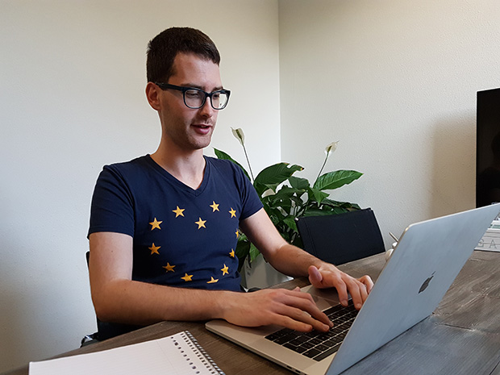

Mathematical Institute
Leiden University
Niels Bohrweg 1, 2333 CA Leiden (NL)
Office: room 221
Welcome! My name is Mirko Signorelli, and I work as assistant professor in Statistics at Leiden University. In this website you can find information about my research and work.
I currently work as assistant professor in Statistics at the Mathematical Institute of Leiden University, where I do research and teach courses for the Master in Statistics and Data Science, the Bachelor in Wiskunde (Mathematics) and more.
I received a double PhD in Statistics from the University of Groningen and from the University of Padova in 2017. After that, I worked for 4 years as postdoctoral researcher at the Department of Biomedical Data Sciences (section of Medical Statistics) of the Leiden University Medical Center.
My research work deals with the development of new statistical methods, computationally efficient implementations of such methods, and with applied research questions.
My methodological research is centered on the development of new statistical models for the analysis of dependent data and high-dimensional data, focusing in particular on longitudinal data, survival data, and complex networks. Some of these new methods are implemented in free and publically available R packages.
As concerns applied research, I have mostly worked on applications of statistics to biomedical problems and to social network analysis. In particular, I collaborate with a team of biologists, doctors and neurologists, on the analysis of a variety of clinical and omic data on muscular dystrophies, with a particular focus on the identification of prognostic biomarkers for Duchenne muscular dystrophy.